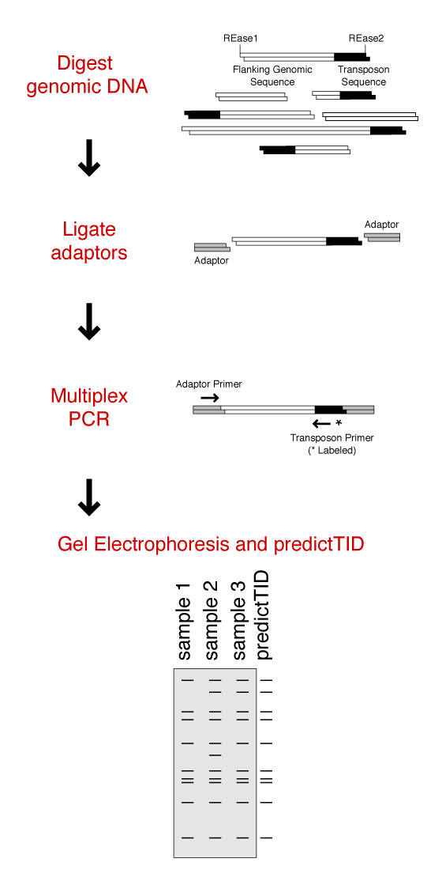

Inspired from AFLP (Amplified Fragment Length Polymorphisms), techniques that take advantage of transposon sequences have recently emerged as valuable tools for molecular analyses (e.g. population analysis, detection of transposition events, gene tagging or recovery of integration sites, in animals as well as in plants). These different transposon-based mapping strategies have been commonly referred to as Transposon Insertion Display (TID), Sequence-Specific Amplified Polymorphisms (S-SAP), Transposon Display (TD) or Anchor PCR Display. Although there are variations between these protocols, the underlying principle is similar.
The basis common to all TID techniques is an adaptor-mediated multiplex PCR-amplification of genomic restriction fragments that contain a transposon marker sequence along with variable length of the DNA sequences flanking the insertion sites (Figure 1). Transposon mapping protocols differ in the type of transposon chosen as marker and in the adaptors that have been adopted to avoid the amplification of restriction fragments that do not contain transposon sequences (i.e. non-specific).
| Figure 1 - Transposon Insertion Display Strategies. |
|---|
| Genomic DNA is digested with restriction endonucleases (REase), yielding transposon fragments (depicted in black) with varying lengths of adjacent sequence (white bars). Adaptors (represented in grey) are ligated and a multiplex PCR amplifies transposon termini with flanking DNA sequences using primers directed against the adaptor and transposon family. Radioactive or fluorescent-labeled primer (*) allows for detection after size-fractionation Gel Electrophoresis. If the genome sequence in question is known, the number and size of expected fragments can be calculated (e.g. by using PredictTID on Arabidopsis). This serves to optimize experimental designs, allow polymorphic bands to be distinguished from artifacts or to provide support for the observed data. |
|  |